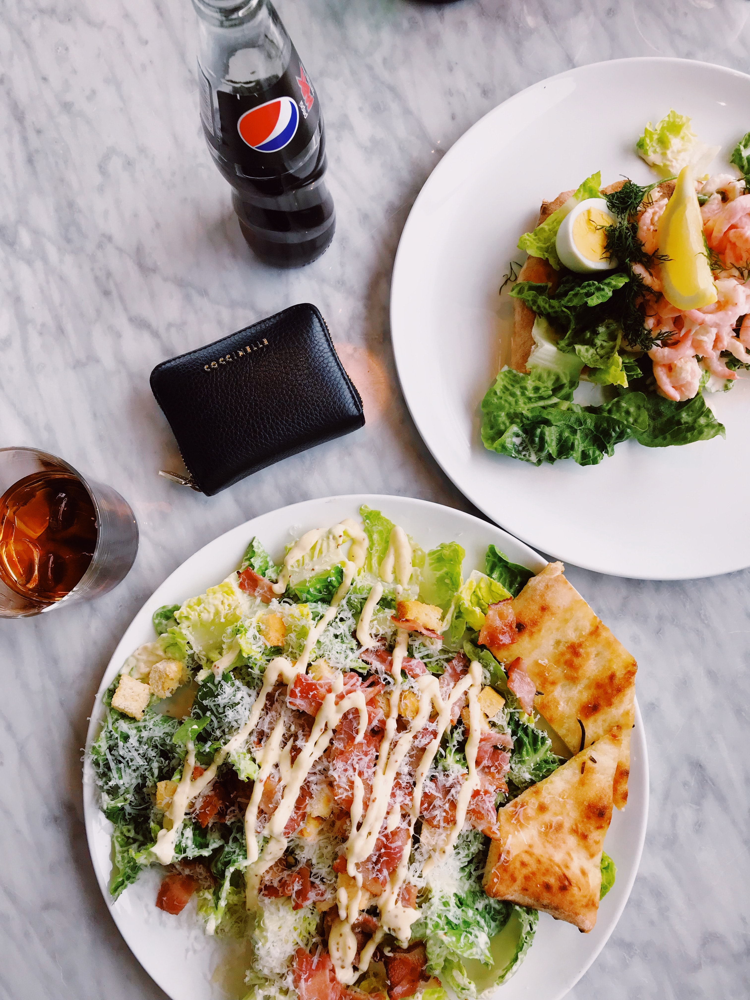

About The Meals
Best Quality MealsIt’s amazing what low expectations can do, and on a weeklong trip to Maine this summer, this was the only notable restaurant I ate at that I did not know anything about in advance ,It was recommended by the guides from Backroads. the nation’s top biking and walking vacation company. I also visited Primo, a very hard to get reservation with a James Beard award winning chef, and acclaimed Relais & Chateaux eatery Natalie’s in Camden , but it was lesser known Fathom that blew me away. The focus is on local and seasonal ingredients, which on Mt. Desert Island means seafood, but also garden fresh summer tomatoes, wild blueberries, and the delicious zucchini blossoms that were stuffed with an herbed ricotta then tempura battered and deep fried
My favorite was the home made sweet potato gnocchi.- a tricky pasta almost every restaurant fails to do well
About The Kitchen
about the menuM & A's menu has expanded from a basic offering of burgers, French fries, sodas, and milkshakes to a larger and more diverse set of products. In 1957, the "Whopper" became the first major addition to the menu, and it has become Burger King's signature product since , Conversely, BK has introduced many products which failed to catch hold in the marketplace Some of these failures in the United States have seen success in foreign markets, where BK has also tailored its menu for regional tastes. From 2002 to 2010, Burger King aggressively targeted the 18–34 male demographic with larger products that often carried correspondingly large amounts of unhealthy fats and trans-fats , This tactic would eventually damage the company's financial underpinnings and cast a negative pall on its earnings. Beginning in 2011, the company began to move away from its previous male-oriented menu and introduce new menu items, product reformulations and packaging, as part of its current owner 3G Capital's restructuring plans of the company

M & A Specials
Chef Summie
last updated, 18 April 2019